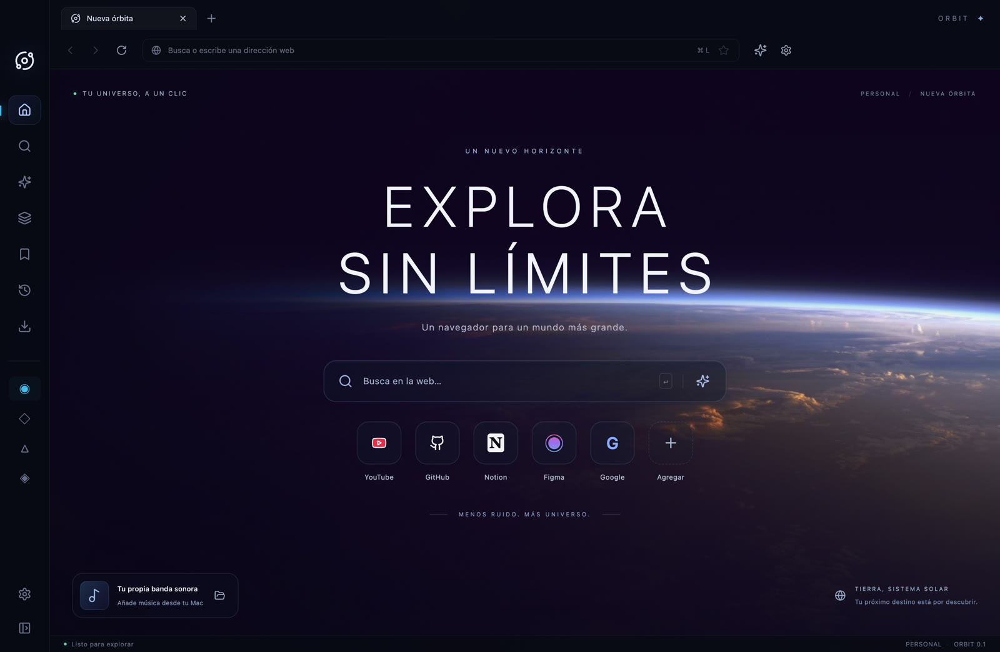

Un navegador de verdad.
Páginas web con Chromium y vistas nativas independientes. Pestañas, historial, marcadores y descargas.
ELECTRON + WEBCONTENTSVIEWUN NUEVO HORIZONTE
Menos ruido. Más universo.
Un navegador para un mundo más grande.
Apple Silicon · Versión de desarrollo sin firma ni notarización

TU UNIVERSO, EN ORDEN
Navegación real. Una interfaz que respira.
Y espacio para todo lo que te mueve.
Páginas web con Chromium y vistas nativas independientes. Pestañas, historial, marcadores y descargas.
ELECTRON + WEBCONTENTSVIEWPersonal, trabajo, estudios o proyectos. Organiza tus pestañas y marcadores en contextos independientes.
ESPACIOS DE TRABAJOConecta tu proveedor de IA para preguntar, resumir o traducir. Tú eliges la API y el modelo.
REQUIERE CONFIGURACIÓNHECHO A TU MEDIDA
Del silencio del espacio al color de tu mundo.
Fondos cinematográficos y cristal que se adapta a ti.
La identidad original de ORBIT. Oscuro, limpio y cinematográfico.
EN CONSTRUCCIÓN. EN ÓRBITA.
Explora el código, consulta el estado del proyecto o comparte una idea. ORBIT está en su primera versión alpha.
Explorar el repositorio ↗TU PRÓXIMO DESTINO
Descarga ORBIT y empieza a explorar desde tu Mac.
Descargar para Mac ↓La aplicación aún no está firmada ni notarizada con Apple. macOS puede bloquear su apertura. No se recomienda como navegador principal para información sensible. Consulta los requisitos y las limitaciones antes de instalar.
Notas de la versión ↗Esta página presenta la aplicación. Para navegar con ORBIT necesitas descargar y ejecutar la versión de escritorio compatible.